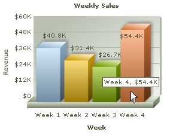
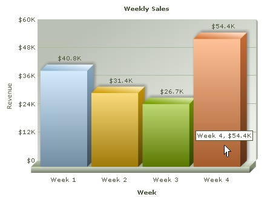
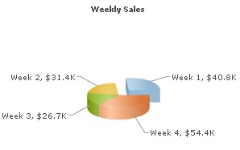

FusionCharts PHP Class API > First Chart |
||||||||||||||||||||||||||||||||||||||||||||||||||||||||||||||||||||||||||||||||||||||||
| To begin with, let's create a simple chart that will visually depict the Weekly Sales of a fictitious shop. The sample data that we intend to plot can be tabularized as under: | ||||||||||||||||||||||||||||||||||||||||||||||||||||||||||||||||||||||||||||||||||||||||
|
||||||||||||||||||||||||||||||||||||||||||||||||||||||||||||||||||||||||||||||||||||||||
| Let's see how to use FusionCharts PHP Class to plot this data into a column3D chart: | ||||||||||||||||||||||||||||||||||||||||||||||||||||||||||||||||||||||||||||||||||||||||
<?php # Include FusionCharts PHP Class # Create Column3D chart Object ?> <?php </body> |
||||||||||||||||||||||||||||||||||||||||||||||||||||||||||||||||||||||||||||||||||||||||
Let's analyze the steps involved in the above code:
|
||||||||||||||||||||||||||||||||||||||||||||||||||||||||||||||||||||||||||||||||||||||||
| Here is the Column 3D chart that our FusionCharts PHP Class renders: | ||||||||||||||||||||||||||||||||||||||||||||||||||||||||||||||||||||||||||||||||||||||||
|  | ||||||||||||||||||||||||||||||||||||||||||||||||||||||||||||||||||||||||||||||||||||||||
| Please go through FusionCharts PHP Class API Reference section to know more about the functions used in the above code. | ||||||||||||||||||||||||||||||||||||||||||||||||||||||||||||||||||||||||||||||||||||||||
| How to change chart width and chart height? | ||||||||||||||||||||||||||||||||||||||||||||||||||||||||||||||||||||||||||||||||||||||||
When we declare an object of FusionCharts PHP Class the constructor is invoked. This constructor accepts the parameters that sets the chart type, chart width and height. In the above code, the statement $FC = new FusionCharts("Column3D","300","250"); invokes the constructor which sets chart type as Column3D; width to 300 pixels and height to 250 pixels. |
||||||||||||||||||||||||||||||||||||||||||||||||||||||||||||||||||||||||||||||||||||||||
| $FC = new FusionCharts("Column3D","450","350"); | ||||||||||||||||||||||||||||||||||||||||||||||||||||||||||||||||||||||||||||||||||||||||
|  | ||||||||||||||||||||||||||||||||||||||||||||||||||||||||||||||||||||||||||||||||||||||||
| How to change chart type? | ||||||||||||||||||||||||||||||||||||||||||||||||||||||||||||||||||||||||||||||||||||||||
| As we discussed above, chart type is also specified while declaring FusionCharts PHP Class object. $FC = new FusionCharts("Column3D","300","250"); To make a Pie Chart for our Weekly Revenue data, we just need to use Pie3D instead of Column3D while creating FusionCharts class object: $FC = new FusionCharts("Pie3D","300","250"); |
||||||||||||||||||||||||||||||||||||||||||||||||||||||||||||||||||||||||||||||||||||||||
|  | ||||||||||||||||||||||||||||||||||||||||||||||||||||||||||||||||||||||||||||||||||||||||
| To change chart type you can use any of the Chart Type names listed below : | ||||||||||||||||||||||||||||||||||||||||||||||||||||||||||||||||||||||||||||||||||||||||
|
||||||||||||||||||||||||||||||||||||||||||||||||||||||||||||||||||||||||||||||||||||||||
| Please note that Chart Type Names - Line, MSLine and MSColumnLine3D from previous version are change to Line2D, MSLine2D and MSColumn3DLine (respectively). The old Names ares still applicable, though depricated. We recommned to use the new Names. |